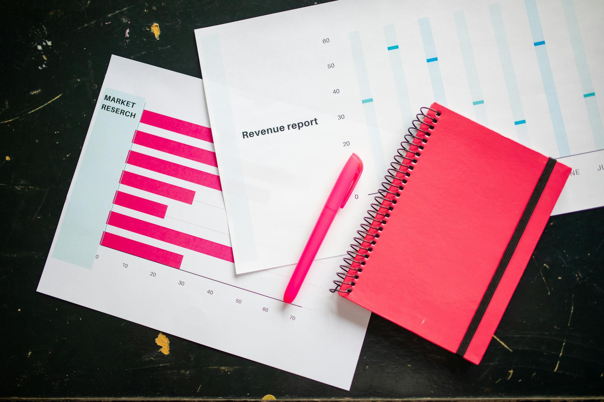

TL;DR
Maximize retirement savings by avoiding common pitfalls like missed employer matches and early withdrawals. Use tools like ETFs and robo-advisors for easier management. Regularly review your retirement plan to adjust as needed.
Quick Answer
Start by prioritizing contributions to a 401(k) or an IRA. For beginners, contributing at least enough to get the full employer match—often around 3% to 6%—is crucial. This approach establishes a steady savings rate right from the start.
For example, if you’re earning $50,000 annually, aiming for 6% means setting aside $3,000 each year. Ignoring this step can significantly delay your financial progress. A fundamental mistake is also withdrawing from retirement accounts prematurely, incurring penalties and missing out on critical compounding.
Why Most Beginners Misunderstand Retirement Accounts
Many first-time investors often fall into traps by overcomplicating their retirement strategies or misunderstanding their accounts’ features. For example, overthinking early withdrawals can lead to panic-driven decisions, triggering penalties that can cost thousands.
If a beginner withdraws $10,000 from a 401(k) before age 59½, they will face a 10% penalty—$1,000—plus income taxes on the full amount, which might be around 22% for someone in that income tax bracket, adding another $2,200.
This means that the actual cost of that early withdrawal can total $3,200, significantly depleting the retirement funds that are meant to support them later in life.
Misjudging contribution limits also poses a problem. For instance, if someone under 50 contributes only $5,000 to their IRA in 2023, they miss out on the maximum allowed $6,500. This may seem minor, but by failing to make that additional $1,500 contribution, they lose out on potential compound growth.
Assuming an average return of 7% over 30 years, that missed contribution could result in a loss of nearly $12,000 by retirement.
Consider the case of Tom, a 28-year-old who decided to withdraw $8,000 from his 401(k) for a vacation. Not only did he face a $800 penalty, but with taxable income added, his overall tax hit brought the total cost to around $1,800, leaving him with only $6,200 for his trip. Meanwhile, if he had left that money invested, compounded over 30 years, it could have grown to approximately $60,000 by the time he retires.
These common misunderstandings and oversights can severely hinder financial growth, making it crucial for beginners to educate themselves on the specifics of their retirement accounts.
A 30-Day Screening Process
To ensure a well-balanced retirement portfolio, implement this monthly screening process over the next 30 days:
- Review your contributions – Check if you're contributing at least enough to receive employer match benefits.
- Analyze your asset allocation – Evaluate if your investments are diversified across stocks, bonds, and other assets. Aiming for a mix such as 70% stocks and 30% bonds can balance growth and stability.
- Identify fees – Make sure to uncover any hidden fees within your accounts; even 1% in annual fees can add up over time, substantially impacting your long-term growth. For example, a $100,000 portfolio with a 1% fee versus a 0.5% fee can result in a difference of nearly $100,000 over 30 years due to compounding effects.
- Set goals – Determine if your investment aligns with your future needs, such as buying a house or funding education. Following this screening process regularly will help secure a more robust retirement strategy.
A Real Scenario for Beginner Investors
Imagine a beginner investor named Sarah, who is eager to start her retirement journey with just $100 per month. Rather than waiting to accumulate a lump sum, she initiates a recurring investment plan to make her financial goals more attainable.
Sarah decides to allocate her monthly contribution as follows: she invests $60 into a broad market ETF like the Vanguard Total Stock Market ETF (VTI) to gain exposure to a diverse array of U.S.
stocks. She uses $20 to purchase shares in a well-known dividend ETF such as the Schwab U.S. Dividend Equity ETF (SCHD), benefiting from consistent income and potential growth. For the remaining $20, she opts to keep it in cash or a stable bond fund, like the iShares U.S.
Treasury Bond ETF (GOVT), for added safety.
In the early months, Sarah's investment portfolio may appear modest, with her account showing around $300 after three months. However, the key transformation here is behavioral. By committing to her plan, Sarah is not only building a consistent investment habit but also actively reducing the psychological urge to time the market or chase fleeting trends.
Let's consider a case scenario over a year; after 12 months of consistent investing, Sarah will have contributed a total of $1,200. Assuming a modest annual return of 6% on her broad market investments, her portfolio could be valued at around $1,272 by the year's end, demonstrating the power of compounding.
Along the way, Sarah learns valuable lessons about market fluctuations—perhaps experiencing a downturn during which her ETF values dip temporarily. This challenges her patience but ultimately reinforces her commitment to her strategy.
As she watches her $300 transform into over $1,270, Sarah recognizes that sticking to her plan has not only built her financial literacy but also fostered a sense of empowerment. This experience sets her up for future success, making it easier to ramp up her contributions as her financial situation improves, while also instilling confidence in navigating the complexities of investing.
Mistakes That Cost Real Money

Beginners often leave money on the table by ignoring employer matching contributions. Failing to take full advantage of this benefit is a costly mistake; for instance, if your employer offers a 100% match on the first 3% of your salary and you earn $50,000, not contributing at least $1,500 means you miss out on additional free money.
Another common pitfall is becoming too conservative early on. Sticking entirely to bonds might seem safe, but limiting stock exposure can lead to stagnant growth. Over 30 years, a conservative strategy could yield only a fraction of returns compared to a well-diversified portfolio including equities.
Look closely at your contributions and actively manage your portfolio to avoid these costly errors.
Which Tools or ETFs Make This Simpler
For beginners, starting with robo-advisors like Betterment or Wealthfront can streamline the investing process. These platforms simplify portfolio management by using algorithms to allocate funds based on user risk tolerance and preferences, requiring minimal intervention.
Alternatively, consider broad-market ETFs like the Vanguard Total Stock Market ETF (VTI) for simplicity and diversification. Remember, while these tools facilitate easier tracking and decision-making, avoid the temptation to tweak your investments too frequently.
Focus on maintaining a long-term perspective; consider reviewing your strategy semi-annually or annually instead of weekly to mitigate impulsive decisions that often lead to mistakes.
FAQ
What are the most common mistakes beginners make with retirement accounts?
Common mistakes include ignoring employer matching contributions and withdrawing funds early, which can lead to financial penalties and stunted growth.
How can I maximize my retirement savings effectively?
Maximize savings by contributing enough to get any employer match, understanding fees involved, and diversifying your investment portfolio.
What should I consider when choosing a retirement account?
Consider factors like contribution limits, investment options, fees, and your overall long-term financial goals.
How often should I review my retirement account?
It's wise to review your retirement account at least annually, or more frequently if you are making significant contributions or withdrawals.
This article has been reviewed for practical usefulness and is updated when information changes.
Next step
Use the article as a decision point, not just reading material. Your next system matters more than more browsing.
Search more articles
Find related tools, workflows, and guides.
Photo credits
- Photo 1: Antranias via Pixabay
- Photo 2: Mediamodifier via Unsplash
- Photo 3: Amanda Lawrence via Unsplash
- Photo 4: Jakub Żerdzicki via Unsplash
- Photo 5: RDNE Stock project via Pexels